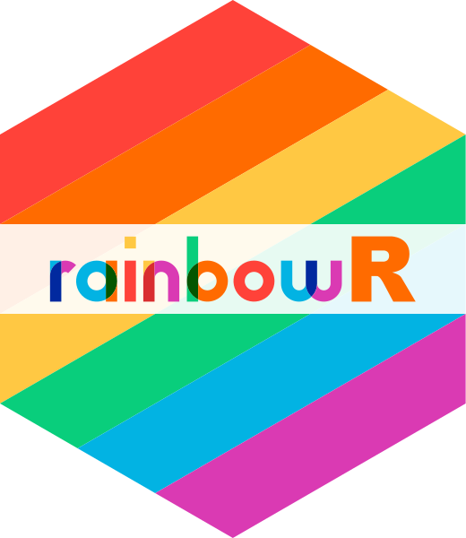
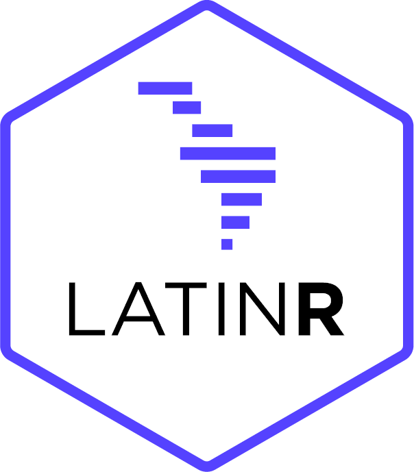
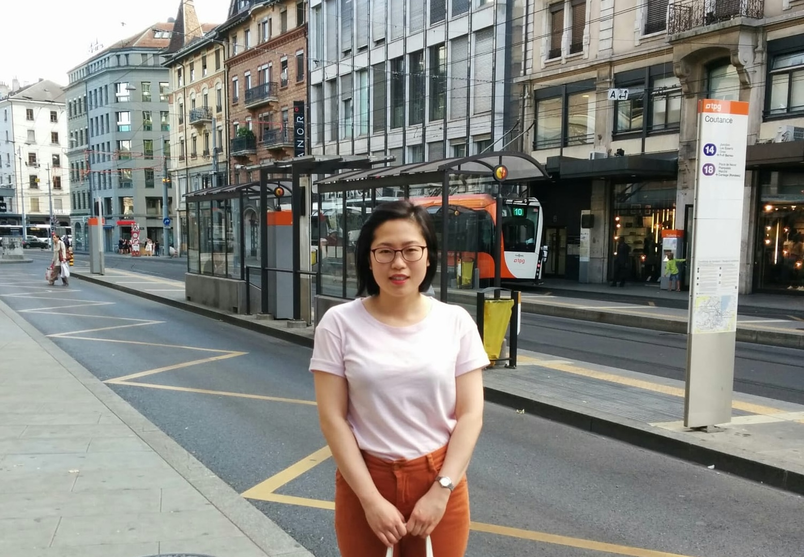

“a(R)t is the engine for change”
keynote at useR! 2024 Salzburg, Austria 🎹 Audrey Yeo
Great minds do not think alike. They challenge each other to think again
- Adam GrantAll Are Welcome Here ♥️


This presentation has ALT text and as much as possible, uses colour-blind friendly palettes
Code for this Quarto-rendered .html will also be sharedEvents PAST
- R Ladies Meet up dinner
- R Ladies Birds of a Feather Lunch
- Inclusive Pathways to Life Sciences and Tech careersEvents NEW
- rainbowR and Allies Lunch today at 12h30-13h30 :
"rainbowR is a community that supports, promotes and connects LGBTQ+ people who code in the R language. We run monthly online meetups and also run a buddy scheme. https://rainbowr.netlify.app"Rule 10: Make the conference part of a long-term process for inclusion
(Joo et al, 2022)
- Scholarhips
- Gender Neutral Bathrooms
- Spotify playlist : Be My Upbeat Ally 🎸
- and more!Inclusive Speaker Orientation
- Linux Foundation
Diversity refers to the vast array of human differences especially those that have been HISTORICALLY disadvantaged
Inclusion refers to systems that ACTIVELY include and support individuals regardless of their identitiesWho am I ?
Just another human multi-hyphenate doing my best.
Clinician-Poet-Statistician-Software Engineer ...
Healthcare, Finance, Academia, Pharma ...
Cycling, Swimming, Bouldering, Poetry...

Why are we here ?
A good conference experience can make a difference in the
professional development of the participants and
create long-lasting collaborations
and opportunities
(Joo et al, 2022)Our vision here at useR!2024
improve accessibility for the wider community such that they can participate and feel safe
regardless of gender,
gender identity,
sexual orientation,
disability, race, ethnicity, age, religion
or economic status...How do we…
Create long-lasting collaborations and opportunities (Joo et al, 2022)
&&
A safe space at the useR!2024 conference
&&
Make the conference part of a long-term process for inclusion ?How ?
- Code of conduct - read it.
Be Kind. Be Respectful. - The Arts
“A raintree bent towards a window in one side of the bungalow, eavesdropping on the conversations that had taken place inside over years.”
― Tan Twan Eng, The Garden of Evening Mists
Be Kind. Be Respectful. Be Curious.
Statisticians in History
Florence Nightingale war eine britische Krankenschwester, Statistikerin, Begründerin der modernen westlichen Krankenpflege ...
- WikipediaOn Florance Nightingale:
"Their principle, if logically carried out, is simply to throw out all ages and all diseases and then there would be no mortality whatever."Why we need Diversity in Statistics
Because we need to keep solving the world's most urgent problems in
Medicine, Climatology, Sociology ... we need everyone onboard :
Ronald, John, Bruno, Carlo, David and more ...Quote inclusively
Quote her ...
Quote they/them ...
as well.Learn something … “new”
What if I told you that you had Missing information about the world, about the future and about yourself ?
"What Health Care is Learning From the Aviation Industry" (Martha K. Swartz, PhD, RN, CPNP, FAAN)
People are more than 1 thing
"The single story creates stereotypes, and the problem with stereotypes is not that they are untrue, but that they are incomplete. They make one story become the only story."
- Chimamanda Ngozi Adichie, Nigerian writerAssume you have different realities from others
"I did not think of myself as black and I only became black when I came to America."
- Chimamanda Ngozi Adichie, Nigerian writerRecommended Books
(Also in the useR DEI Booklist)- African/Black/Asian : Resmaa Menakem My grandmother’s hands 2017
- Deaf : Nora Ellen Groce Everyone here spoke sign language 1985
- General : Judith Heumann Being Heumann 2020
- Deaf/blind : Haben Girma Haben: The Deafblind Woman Who Conquered Harvard Law 2019
In summary
1. Read the Code of Conduct
2. Open yourself up to Missing Information
3. Quote inclusively
4. Drop by the rainbowR and Allies Lunch
5. We make decisions all the time based on incomplete information. These decisions can change lives. - Be Curious
6. Take the Inclusive Speaker orientation course (Linux Foundation)
After the conference
I hope that beyond the conference,
that you continue your work, and make your work
part of a long-term process for inclusionGreat minds do not think alike.
- Adam GrantThank you and take your time
"Sometimes taking the time is a shortcut"
- Haruki Murakami, What I talk about when I talk about running.Backup slides
Ten rules to make conferences more accessible (Joo et al 2022):
- Set a vision for DEI
- Create a safe and welcoming environment
- Gather an inclusive and diverse organizing team
- Consciously counteract bias in the conference program
- Design a strong online component
- Making the conference accessible to people with disabilities
- Make room for the linguistic diversity
- Build an inclusive communication strategy
- Allocate adequate financial resources to support inclusion goals
- Make the conference part of a long-term process for inclusion
References
- Code for this presentation here
- Joo R, Sànchez-Tapia A, Mortara S, Bellini Saibene Y, Turner H, Hug Peter D, et al. (2022) Ten simple rules to host an inclusive conference. PLoS Comput Biol 18(7): e1010164. link
- Inclusive Speaker Orientation
- The danger of a single story link
- Swartz M, (2015) What Health Care is Learning From the Aviation Industry, J Pediatr Health Care. (2015) 29, 1-2. link
- Wilf-Miron R, Lewenhoff I, Benyamini Z, Aviram A (2023), From aviation to medicine: applying concepts of aviation safety to risk management in ambulatory care, Qual Saf Health Care; 1 2:35–39 link
- Bradshaw NA (2020) Florence Nightingale (1820–1910): An Unexpected Master of Data link
- Adam Grant tweet here
Audrey Yeo